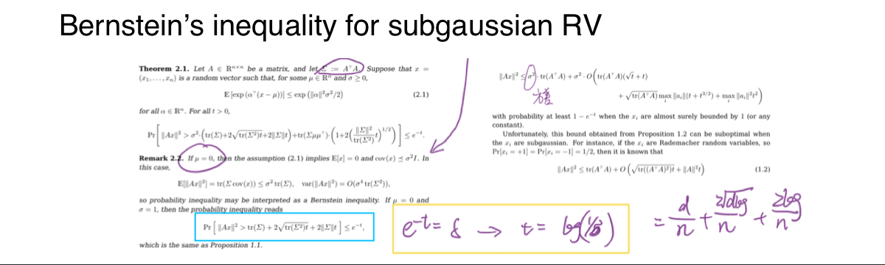

NUS
Stochastic Models and Their Applications (A): probability theory, Markov process
NUS
Data Analytics for Industrial Engineering (A+): machine learning methods
2/10
Yao's Presentation
Academic Coursework (2)
Core Curriculum (Programming)
HUST
Python (95): most proficient, (OOP, tensorflow/pytorch/sklearn packages, much experience in RL/DL/ML projects)
HUST
C++ (89)
HUST
Java (86)
HUST
Matlab (96)
HUST
SQL (95)
NUS
Deep Learning: currengly learning; including neural networks/DRL (neural bandits, policy gradient)/Transformer/RAG, training on mathematical proof and coding projects, final project of RL
NUS
Reinforcement Learning: currently learning; a systematic course, training on coding and mathematical proof
NUS
Portfolio Optimization: currently learning; using DRL to optimize the portfolio allocation, tensorflow project
Assumption: linear true reward, contextual bandits (would extend to MDPs)
Pairwise comparison under the BTL model: $MLE$ converges, but fails to yield the optimal policy, while $PE$ succeeds
K-wise comparisons under the PL model: True $MLE$ and $MLE_2$ both converge and yield the optimal policy, but the true $MLE$ is asymptotically more efficient.
Pairwise comparison under MDPs: $PE$ is applicable to trajectory-based comparison, while hard to introduce to action-based comparison.
Aim at bounding the estimation error of MLE in squared semi-norm $||v||_{\Sigma_{\mathcal{D}}+\lambda I}=v^T(\Sigma_{\mathcal{D}}+\lambda I)v$
Strong Convexity of $\mathcal{l}_{\mathcal{D}}$
Step 1: $\mathcal{l}_{\mathcal{D}}$'s Hessian $\nabla^2 \mathcal{l}_{\mathcal{D}}(\theta)$ proves to be an even function and has a lower bound $\frac{1}{n}\cdot\frac{1}{2+exp(-2LB)+exp(2LB)}\cdot\Sigma_{i=1}^n x_ix_i^T=\frac{\gamma}{n}||X||_2^2$
Step 2: function expansion $\mathcal{l}_{\mathcal{D}}(\theta^*+\Delta)-\mathcal{l}_{\mathcal{D}}(\theta^*)-\nabla\mathcal{l}_{\mathcal{D}}(\theta^*)^T\Delta\geq\Delta^T\nabla^2\mathcal{l}_{\mathcal{D}}(\theta^*)\Delta\geq\frac{\gamma}{n}||X\Delta||_2^2=\gamma||\Delta||_{\Sigma_{\mathcal{D}}}^2$
The above shows the quadratic lower bound of $\mathcal{l}_{\mathcal{D}}$, meaning it is $\gamma$-strongly convex with respect to the semi-norm.
Find the upperbound of $\mathcal{l}_{\mathcal{D}}(\theta^*+\Delta)-\mathcal{l}_{\mathcal{D}}(\theta^*)-\nabla\mathcal{l}_{\mathcal{D}}(\theta^*)^T\Delta$ to bound the error $||\Delta||=||\hat\theta_{MLE}-\theta^*||$
Step 1: Because $\hat\theta_{MLE}$ is estimated as optimal for $\mathcal{l}_{\mathcal{D}}$, we have $\mathcal{l}_{\mathcal{D}}(\theta^*+\Delta)-\mathcal{l}_{\mathcal{D}}(\theta^*)<0$
Step 3: Focus on $||\nabla\mathcal{l}_{\mathcal{D}}(\theta^*)||_{(\Sigma_{\mathcal{D}}+\lambda I)^{-1}}$ . Define a random vector $V$ to make $E[V]=0, |V_i|\leq 1$ and $V_i$ is independent $\forall i$, so that $V_i$ is sub-gaussian $\forall i$.
Step 4: Use the Bernstein's inequality for sub-gaussian R.V. in quadratic form

Theorem 3.2 Let $J'=J-(\theta^*)^Tv$, then $SubOpt(\hat\pi_{PE})=J'(\pi^*)-J'(\hat\pi_{PE})$ and it has an upperbound. Note that the only comparisons between estimated values and true values can be observed.
Decomposit the sub-optimality $J'(\pi^*)-J'(\hat\pi_{PE})=(J'(\pi^*)-\hat J(\pi^*))+(\hat J(\pi^*)-\hat J(\hat\pi_{PE}))+(\hat J(\hat\pi_{PE})-J'(\hat\pi_{PE}))$
Step 1: the second difference $\leq 0$
Step 2: the third difference $=\min_{\theta\in\Theta(\hat\theta_{MLE}...,\lambda)}E_{s\sim\rho}(\theta-\theta^*)^T(\phi-v)\leq 0$ with probability $1-\delta$
Step 3: for the first difference, further decomposit the term into two terms that can utilize Lemma 3.1
Theorem 3.9 Failure of MLE
Use concentration of R.V.: Chebyshev inequality
The coverage is $||\Sigma_{\mathcal{D}}^{-1/2}E_s[\phi(s,\pi^*(s))]||_2$
If using PE, the coverage will converge to 1, and thi s is also the single concentrability coefficient
Theorem 3.10 Lower bound of sub-optimality for contextual bandits
Minimax sub-optimality (the best sub-optimality for the worst instance) still has a lower bound
6/10
Yao's Presentation
Paper Description (3)
Proof On K-wise Comparison
Theorem 4.1 Bound the sub-optimality for the true $MLE$
Theorem 4.2 Bound the sub-optimality for the $MLE_2$ that splits $K$-wise comparison into pairwise comparisons
For both prove the strong convexity of $\mathcal{l}_{\mathcal{D}}$ and thus the upper bound of the estimation error
When bouding the estimation error, a random vector $V$ whose components are sub-gaussian should be construct, and Bernstein's inequality is utilized
Finally decomposit the sub-optimality and prove the upper bound using boudning for the estimation error
Theorem 4.3 $MLE_2$ is an M-estimator, so its asymptotic variance is larger than that of true $MLE$, and thus $MLE$ is asymptotically more efficient than $MLE_2$.
Theorem 5.2 $PE$ is applicable on trajectory-based pairwise comparison
Bound the estimation error in Lemma 5.1 and thus bound the sub-optimality
Lemma 5.3 For action-based comparison, the probability of choosing an action should use $Q_\theta$ or $Q^\pi$. Although the estimation error proves to have an upper bound for $Q^*$, yielding a policy with $PE$ is not applicable on this, due to hardness to construct LCB for any $Q^\pi$.
8/10
Yao's Presentation
Paper Description (5)
Extensions and Summary
Nonlinear case: For nonlinear rewards, boundness and smoothness assumption on $r_\theta$ make the estimation error have an upper bound, which, however, will not vanish as the parameter $\alpha_2$ exists.
IRL case: Analysis for MDPs comparison imply connections with Inverse Reinforcement Learning (IRL), where comparisons are not made and observed. Therefore, the probability exludes the indicator function. In this case, the sub-optimality for $\hat\pi_{PE}$ still converges only for trajectory-based IRL.
Summary on preliminary knowledge: High-Dimensional Probability, Mathematical Statistics